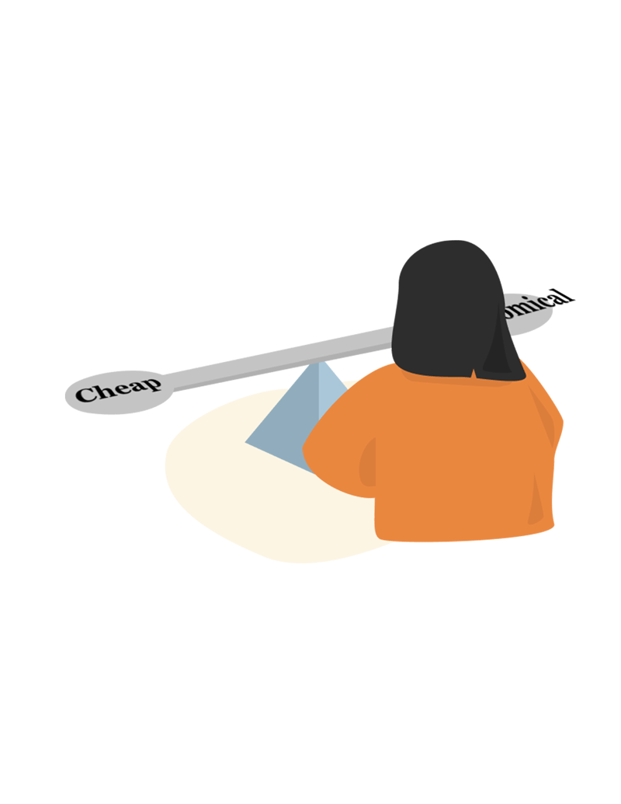

According to our databse, online reviews are wildly unreliable as the number of Fake reviews are 7times more than the real reviews. Therefore, we suggest that online reviewing/rating platforms should only allow people who purchased the product to give reviews. If people want to seek for more reliable reviews, we suggest that look for shorter, emotional reviews with average ratings.
The original database of getting online comments is from Kaggle. On top of the raw data, data analysis is done by Mike Chen, June Zheng, and Clair Sun. For "Emotion Polarity", "Grammar Mistakes", and "Common Word Usage", external libraies and datsets were used. The website is designed and coded by Clair Sun.